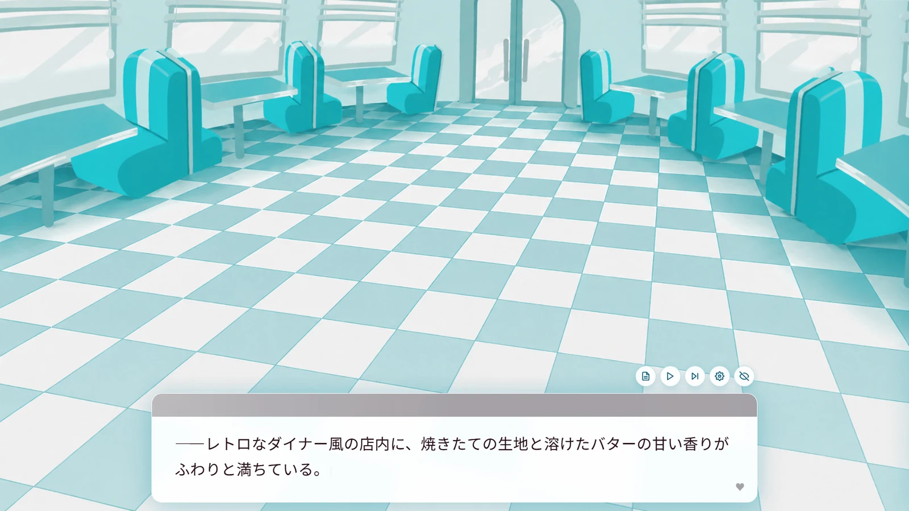

FRUIT DROP
とけて、かたまる。盤面の物性そのものが変わる落ちものパズル。GPU 物理（PB-MPM の DX12 移植・最大 65,536 粒子）の上に落ちものルールを載せ、相によって消去ルールが切り替わる。決定論リプレイを回帰テストに使う開発フローの実証作品でもあります。
詳細を見る →/ works
学部から現在まで作ってきたもの ── チーム / 個人のゲーム、開発ツール、研究コード、創作。多くはリーダーや主担当として、企画から実装まで手を動かしています。
※ 一部はチーム制作で、メンバーの許諾の都合により遊べないものもあります。
自作の MitiruEngine 上で動かしているゲーム。FRUIT DROP とハトを育てようは完成・公開済み、かえるクレープは Godot 版から移植中です。
とけて、かたまる。盤面の物性そのものが変わる落ちものパズル。GPU 物理（PB-MPM の DX12 移植・最大 65,536 粒子）の上に落ちものルールを載せ、相によって消去ルールが切り替わる。決定論リプレイを回帰テストに使う開発フローの実証作品でもあります。
詳細を見る →
2023 年に TyranoScript で書いた原作を、自作の MitiruEngine 上で完全移植 + 追加要素を入れたリメイク版。バックログ、既読管理、セーブロードまで実装。MitiruEngine が「実際にゲームを出せる道具」であることの実証作品でもあります。
詳細を見る →
クレープを作りながらヒロインたちと親睦を深める 美少女ゲーム × クッキングゲーム。コミックマーケット 106 で配布した Godot 版を経て、現在は自作の MitiruEngine 上で書き直し中（1.0.0-rc1）。
詳細を見る →学部時代から書いてきた個人・チーム制作。プロジェクトリーダーとして関わったものを含みます。

怪物から逃げながら塔の脱出を目指す倉庫番系パズル。C++とSiv3Dを使った初めてのチーム開発作品。会津大学・蒼翔祭2022、コミックマーケット101にて無料頒布。
ハトを育てるマルチエンディング育成ゲーム。TyranoScript で書いた原作版。蒼翔祭 2023 にて展示。この作品は後に MitiruEngine でリメイクされています。
ダウンロード →
たくさんの迫りくる化け物を倒すヴァンサバ風ローグライク。初めてのプロジェクトリーダー経験。蒼翔祭2023、コミックマーケット103にて無料頒布。

落ちてくる飴玉を回転するドーナツを使ってくっつける落ちものパズル。初めてのUnity開発。蒼翔祭2024にて展示。

ボロノイ図を用いた最短経路探索シミュレーション。ビジュアルコンピューティングのための幾何学という授業で得た知見をもとに作成。点（母点）がいくつか与えられたとき、どの点に一番近いかによって平面を分割したものをボロノイ図といい、それを用いて最短経路を探索する試み。
GitHub →
キャラクターを育成して、アクションに挑む新感覚おばか育成アクション。プロジェクトリーダーとしてチームメンバーのサポートをしながら開発。Unityのようなコンポーネントシステムを参考に設計し、ステージ制作ツールを別途作成。モンスターに支配された会津大学を企画開発部のマスコットキャラクター「ぱんどど」を育成し、モンスター退治をするというストーリー。

Vimの操作方法でクリアを目指す迷路ゲーム。Vimの上下左右移動（h, j, k, l）で迷路をクリアするゲーム。Vimの操作感に慣れるために作成。あらかじめ用意した数十ステージと、全ステージクリア後に開放されるエンドレスモード（ランダムで迷路を生成）で遊べる。
ダウンロード →
数式を打ち込んでグラフを作成し、ゴールを目指すパズルアクション。Siv3Dの数式パース機能を利用して、当たり判定のあるグラフを作成し、ゴールを目指す。数学が苦手な後輩を見て発案。グラフをもっと身近なものにしようという意図でアクションゲームにした。
GitHub →
オスカー × ガーデニング × リズム天国型のタイミングゲーム。種まき（お手本）→ 水やり（プレイヤー操作）→ リザルトの 3 フェーズ構成。リズム判定は Web Audio API の AudioContext.currentTime 基準。MitiruEngine の web-first CEF shell パターンの実装例。
開発の途中で必要になって書いた道具。レンダラー、リソース管理ツール、研究用アルゴリズムなど。
自作の C++20 / header-only ゲームエンジン。マルチ GPU バックエンド、決定論＋自動リプレイ、HTML/CSS で書ける UI。専用ページで詳しく書いています。
Engine ページへ →
MitiruEngine プロジェクトを CMake に触らずに作って・ビルドして・走らせる CLI。mitiru new / mitiru build / mitiru run の 3 コマンドだけで、Cargo や go run の感覚でゲームを書き始められる。エンジンキャッシュと TOML 設定の管理も裏で面倒見ます。
ゲームボーイの音楽ソフト LSDJ（Little Sound Dj）でチップチューンを書くための道具立て 2 種。① ブラウザ上で stem 分離とピッチ検出をかけて譜面を並べる耳コピビューア、② 単旋律 MIDI を .sav 形式に変換する C++ コンバータ（フレーズ重複排除、チェイン最適化付き）。
DirectX 12 をベースにした自作レンダラー / 研究用描画フレームワーク。レンダリングパイプラインの理解を深めるために作成。シェーディング、ライティング、テクスチャマッピングを実装してグラフィックスプログラミングの基礎を整理。
GitHub →会津大学・コンピュータサイエンスサマーキャンプ 2025 の教材リポジトリ。CreateJS（JS トラック）と grasp3d（CG トラック）の 2 部構成。全国の高校生にゲーム開発を指導する際の課題・テンプレート・Git/GitHub の使い方ガイドを提供。
GitHub →数日〜1週間で書いた小物。必要に迫られて作り、公開しているもの。
C++ / Siv3D / ImGui · 2025年夏 · 2日
Siv3D のリソース管理を GUI で自動化するツール。配布されていた類似ツールがリンク切れだったので自作。設計は MVC。
C++ / Siv3D / ImGui
Dear ImGui を Siv3D で即座に使い始めるための最小テンプレート。Siv3D ベースのツール開発の立ち上げ用。
C++ / DirectX 12 / Retro
Asteroids など 1970-80 年代アーケードのベクタースキャン表示を DirectX 12 で再現する実験。
C++ / GLSL / HLSL
GLSL と HLSL の両方を扱うクロスプラットフォームの描画ツール。シェーダー記述の比較・検証用。
ゲーム以外の創作 ── イラスト・Live2D・短編小説。
趣味で描いたイラスト。クリックで拡大表示されます。


自分で作った Live2D モデル。なお、現在は株式会社 Live2D で Cubism SDK for Native（C++）まわりのアルバイトをしており、SDK の保守・不具合対応に携わっています。

趣味で執筆した短編小説です。
SF短編
『秘密』『水槽』『鯨』の三つのお題で書いた作品
最後の一文ですべてが変わる短編ミステリー
どんでん返しもの。よくあるラブストーリーと思いきや……
短編
「最近、猫を飼い始めた。」で始まり「そういえば、人間だった。」で終わる作品を書くというお題で作った物語。
短編SF
星新一っぽい作品が書きたかった。
短編
「それは綺麗だった。」で始まり「明日なんか来なければいいのに。」で終わる作品を書くというお題で作った物語。
最後の一文ですべてが変わる短編ミステリー
どんでん返しもののお題で作った作品。
オリジナルのTRPG（マーダーミステリー）
プレイ人数5人（GM1人、プレイヤー4人）。プレイ時間4時間程度。病院に入院した四人の患者が各々の目標を持って、それを隠しながらクリアを目指すTRPG